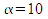
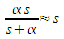
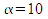
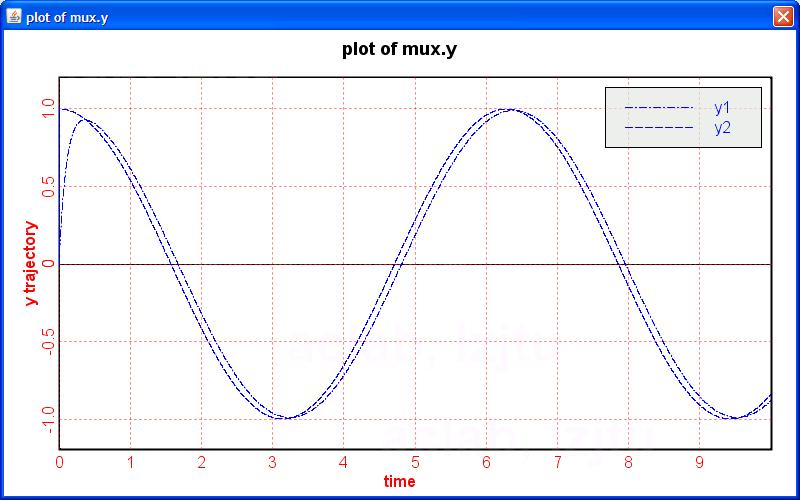
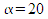
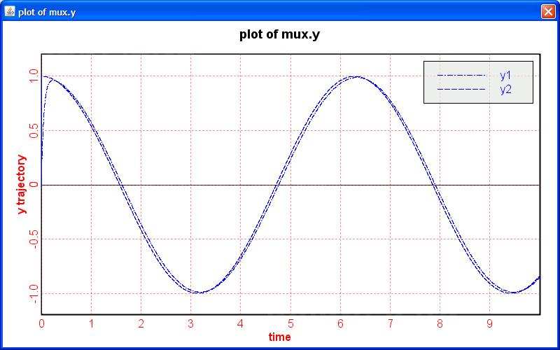

The output of the plot would be like this, when :
Approximate Difference calculates the approximate difference of the input signal by using the following approximation:

when is much greater than 1.
See the following demo:
The
output of the plot would be like this, when
:

and
would be like the following, when
:
